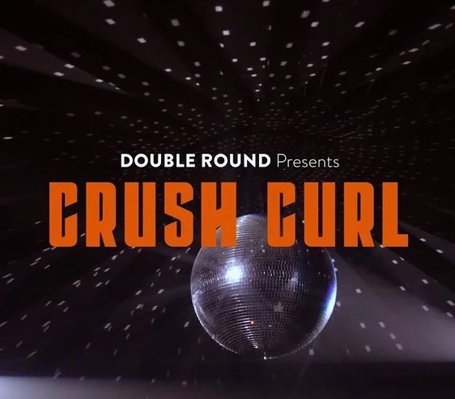

Featured Projects



🎵 DOUBLE ROUND Presents CRUSH CURL Performing PHYSICAL MEDIUM
Live performance video, released March 3, 2024.
🖥️ pgh.events
A music-focused collection of events, playlists, podcasts, youtube channels and blogs in Pittsburgh, Pennsylvania.
🎵 Crush Curl - Physical Medium
5 song EP, released November 10, 2023.